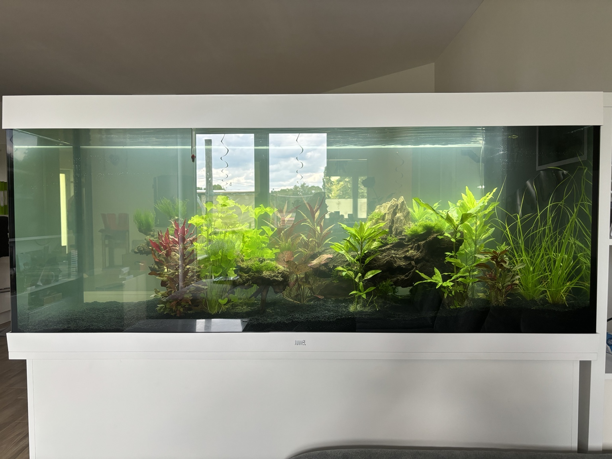

TRISSI Projektbeispiele
Aus Problemen
werden Projekte.
Nicht jedes Projekt beginnt mit einem klaren Auftrag. Manche beginnen mit einem Problem, einer Idee, einem Wunsch, einem vorhandenen Material oder der Frage: Wie fange ich überhaupt an?
Hinweis zu den ersten Projektbeispielen
Eigene Projekte. Echte Arbeitsweise.
Die ersten Projektbeispiele stammen aus eigenen geplanten und umgesetzten Projekten. Sie zeigen keine klassischen Kundenreferenzen, sondern geben Einblick in die Arbeitsweise von TRISSI: Probleme erkennen, Ideen entwickeln, Risiken bedenken, Materialien auswählen, Lösungen planen und Schritt für Schritt umsetzen.
Beispiele
Was war der Ausgangspunkt? Welche Lösungsidee entstand daraus?

Terrasse, Sonnensegel & Poolbereich
Eine Terrasse sollte besser beschattet werden, ohne die Hauswand zu beschädigen und ohne Arbeiten auf dem Dach auszuführen.
Projekt ansehen
Familien-Spielplatz
Ein wachsendes Spielplatzprojekt und ein Ursprungsgedanke von TRISSI.
Projekt ansehen
Aquarium-Hardscape
Ein Beispiel für den TRISSI-Gedanken im Kleinen: Wie fange ich überhaupt an?
Projekt ansehenDein Problem sieht anders aus?
Das ist normal.
Wenn dein Anliegen nicht direkt zu einem bestehenden Bereich passt, kannst du es trotzdem schildern.
Nicht jedes Problem kann sofort gelöst werden.
Aber jedes gute Problem kann der Anfang für eine neue Lösung sein.
Aber jedes gute Problem kann der Anfang für eine neue Lösung sein.